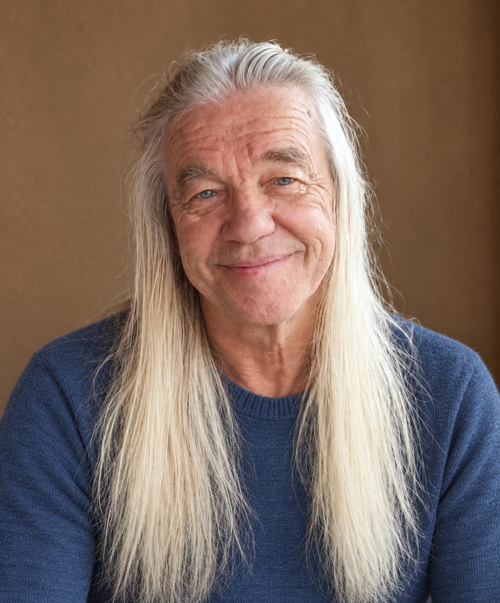

О консультанте
Обо мне
Я знаю проблему алкогольной зависимости по личному опыту и многолетней работе с людьми.
Мой путь
Я консультант по алкогольной зависимости. Более двадцати лет я тяжело пил. Затем ещё около девяти лет пытался справиться с употреблением и снова возвращался к запоям. С 15 августа 1999 года живу трезво.
Мне знакомы непреодолимое желание выпить, обещания себе и близким «не пить», тяжёлые выходы из запоев. Этот опыт помогает понимать, с чем человек приходит на консультацию. При этом я не считаю собственную историю универсальным рецептом для других.

Профессиональный путь
Работаю консультантом с 2012 года
В работе соединяю профессиональную подготовку, практический опыт и индивидуальный подход.
Я работал в реабилитационных программах и частной практике в Болгарии, Великобритании, Латвии и Финляндии. Мой опыт включает индивидуальные консультации, групповую работу и сопровождение после лечения. Я взаимодействовал с врачами, психологами и социальными работниками, проводил лекции и вебинары в Финляндии.
2012 · Болгария
МПА «СВОБОДА».
2013–2014 · Великобритания
Индивидуальная практика.
2014–2018 · Латвия
Работа в программе «Миннесота» и индивидуальная практика.
С 2018 года · Финляндия
Индивидуальная практика, в том числе онлайн.
Образование и обучение
Профессиональная подготовка
Подготовка консультанта по химической зависимости и дополнительное обучение по работе с зависимостью.
Программа подготовки консультантов по химической зависимости — 520 учебных часов. Квалификация консультанта по химической зависимости. Диплом от 28 октября 2016 года, действителен с приложением.
School of Counselors, Training in Addiction Therapy — 32 часа. Stefan Batory Foundation / Regional Alcohol and Drug Program, OSF New York.
Международная школа: зависимость, созависимость, профилактика срыва и методы интервенции — 28 часов лекций и семинаров.
Семинар по консультированию по вопросам зависимости от алкоголя и наркотиков, 18–21 марта. Regional Alcohol and Drug Program / Stefan Batory Foundation.
Oxford Learning — программа Addiction Counselling.
Моя роль
Без универсального рецепта
Я не врач, психиатр или психотерапевт. Не назначаю лекарства и не заменяю необходимое медицинское лечение. Моя работа — консультирование по алкогольной зависимости: поддержка мотивации, анализ механизмов употребления и помощь в построении жизни без алкоголя.
В работе я использую профессиональные модели и инструменты, в том числе подходы Джеллинека, Терри Горски и идеи Филиппа Флореса. Подбираю их под конкретную ситуацию человека. Решения и действия остаются за клиентом.
Начать разговор
Можно коротко описать, что происходит, и выбрать удобный мессенджер на странице контактов.
Написать Владимиру